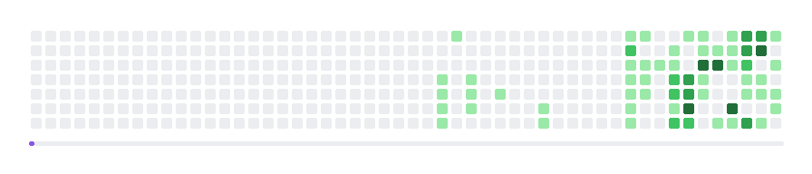

EN · 中文


Software Engineering student · Java & Python · Agent Engineering
Email · Blog · Digital Garden
Contact
Agent workflow
I use coding agents for repository exploration, research, repetitive edits, and first-pass implementation. The surrounding harness matters more than the prompt: scoped tasks, repository rules, reproducible commands, tests, documentation, and a final diff review. I remain responsible for the design decisions and every merge.
Tech stack
|
Frontend Node.js / real-time Java / Spring AI / agents Distributed systems Data / middleware Python / API Systems / inference Web3 DevOps / observability |

|
Competitions
Lead Cup · vLLM on Hygon DCU2026 National Collegiate Computer System Capability Competition, Lead Cup Problem 1. Team: 翻斗花园 · Role: kernel fusion and decode/prefill routing Leaderboard best run: 87.7839 / 100 · #26 / 132 · SLA 0 · precision 0 We optimized vLLM 0.18.1 serving Qwen3.5-27B on a fixed Hygon DCU (gfx936). My work covered shared-gate fusion, a gate-up and SwiGLU HIP kernel, GDN launch packing, Gather-FA routing, and LPK prefetch.
|
AI4S · 书生国智科探挑战赛Status: registered and preparing · Team: 翻斗花园, five members · Role: team member We entered the 模型与算子 track organized by Shanghai AI Laboratory and Biren. The current preparation covers agent-assisted scientific models and operator work for PINN, GNN, and FNO-style computation on Biren GPU. No score or public deliverable is available yet. |
HarmonyOS · C4 University Innovation CompetitionStatus: under consideration; registration is not yet confirmed. The intended direction is operating-system intelligence: heterogeneous scheduling, cross-device communication, and perception data flow for system-side AI efficiency. If the team confirms entry, the work will be documented here with its repository, demo, and submission materials. |
Monad Builder CampStatus: in progress. A practical Web3 program organized around building and presenting an on-chain product on Monad. I am currently working through the builder track before committing to a final product direction. |
GitHub stats
|
|
|
Classic project
AgentCFO: DAO treasury assistantAgentCFO is a hackathon prototype for preparing and approving DAO treasury payments through the Cobo Agentic Wallet.
|

|
What I'm learning
- Java and Python business systems: service boundaries, persistence, caching, deployment, and the maintenance work expected in a backend or AI application engineering internship.
- Agent Engineering: tool calling, RAG, MCP, context design, evaluations, and the repository harness needed to make agent output reviewable.
- Systems and inference: vLLM scheduling, attention backends, gfx936 kernel profiling, and TTFT, TPOT, throughput trade-offs under fixed SLAs.
- Scientific computing: agent-assisted PINN, GNN, and FNO-style workloads plus operator engineering on Biren GPU.
- Operating systems and devices: heterogeneous scheduling, cross-device communication, and perception data flow for system-side AI.
- Web3: Smart Accounts, Session Keys, Monad product development, and the gap between a testnet demo and production UX.
Activity

Last year's contribution heatmap, animated.
Last updated: July 2026